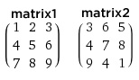

The instruction parsing of the assembler works such that first all comments, denoted
by text following a pound symbol, are removed from the code. The .mif file starts
out with the initialization lines which define the width and depth our code. The width
is the same as the number of bits of our instruction (32 bits) and the depth is (512*2^13)/32
= 131072 bits!
The .asm file is to be organized so that instructions come first, then the data which is stored
in symbolic references. There are two types of symbolic references as identified by our assembler,
".array" which consist of several values delimited by commas and ".integer" which consists of
a single integer value. In the case of matrix multiplication, the user will first specify the program
that will perform the matrix multiplication computations, followed by the size n of the n by n
matricies (a ".integer" symbolic reference), followed by each matrix in ".array" form. The matricies
should be entered row by row, left to right. In the symbolic references this can be done by the following
example:
.size .integer 3
.matrix1 .array 1,2,3,4,5,6,7,8,9
.matrix2 .array 3,6,5,4,7,8,9,4,1

In order to access the address of the instructions, we have modified the addi instruction so that if
a user specifies a symbolic reference location to add to a register, the value that will go in the
register will be the address of the symbolic reference. For example, the following instruction:
addi $29, $0, matrix1 #Load the base address of the first matrix
would translate to the following byte code:
1 : 00111101000000000000000000011011;
Where the last 19-bits represent the immediate field. In this case, the last bits represent the address
of matrix1 which is 11011 (binary) -> 1B (hex). Line 1B is as follows in the .mif output file:
1B : 00000000000000000000000000000001;
|